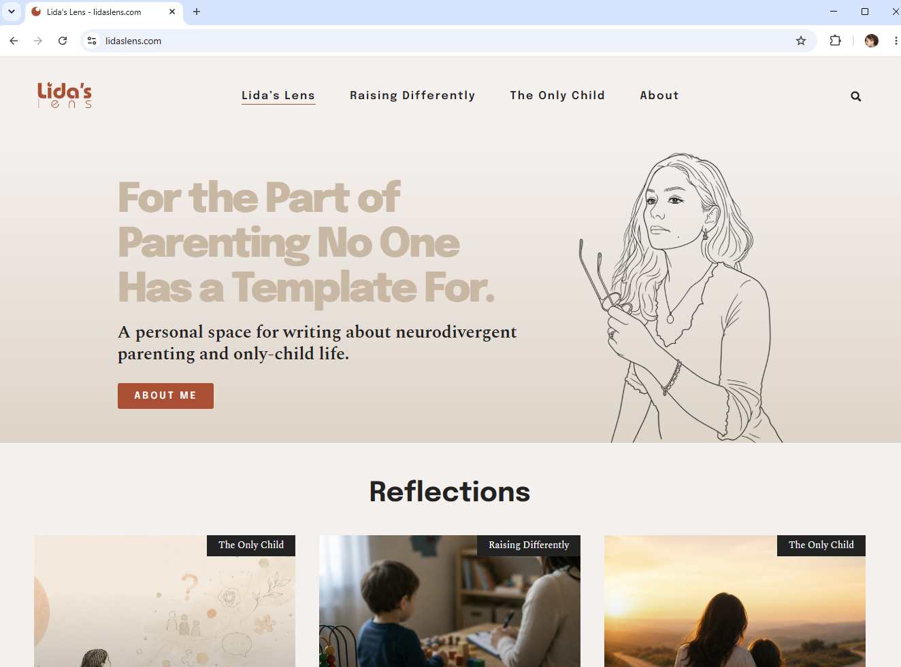

End-to-End Digital Analytics & MarTech Implementation on lidaslens.com
Visit lidaslens.com
Open the live website ↗01Executive Overview
Lida's Lens: End-to-End Digital Analytics & MarTech Implementation
Lida's Lens is a live parenting-content website used as a real-world environment for building and developing an end-to-end Digital Analytics and MarTech stack.
The project covers the full lifecycle from measurement strategy and consent-aware data collection to behavioral analysis, CRM activation, acquisition and optimization. The architecture is deliberately evolving as readership and data volume grow.
Current scope
LIVE: GTM, GA4, custom dataLayer, Advanced Consent Mode v2, CookieYes, HubSpot CRM, Make automation, Meta Pixel, Microsoft Clarity, Contentsquare/Hotjar, Google Search Console, Rank Math, WP Statistics and GA4 to BigQuery export.
ITERATING: GTM/dataLayer audit, measurement refinement, behavioral analysis, organic performance analysis, CRM development and data-quality validation.
ROADMAP: Meta acquisition campaigns, HubSpot email automation, SQL analysis, CRO experimentation, server-side GTM and Meta Conversions API.
Architecture overview
Organic acquisition
Advertising measurement
LiveMeasurement & data
LiveBehavioral analytics
CRM & automation
CRO & experimentation
RoadmapAdvanced measurement
RoadmapThe architecture shows both the current production stack and the next planned development stages. The implementation combines centralized tag management with separate measurement, consent, behavioral analytics, acquisition and CRM branches.
02Business & Measurement Strategy
Status: LIVE / ITERATING
Business context
Lida's Lens operates within a deliberately focused parenting niche, primarily covering Autism Level 1 (mild autism) / raising differently and only-child family life.
The intended reader journey is:
The primary measurement objective is therefore Engaged Readership Growth, rather than traffic volume alone.
Measurement approach
The tracking architecture separates observable behavior from derived business metrics.
Core collected signals include:
page_viewarticle_engagementgenerate_leadcontact_submitsharecategory_clickArticle and page context is enriched through the custom dataLayer.
Deep article engagement currently represents at least 45 seconds of visible-page time combined with 60% article scroll depth.
Higher-level measures are to be derived from these signals rather than creating unnecessary tracking events for every KPI.
Examples include:
| Business question | KPI | Measurement / analytical source |
|---|---|---|
| Are visitors actually reading? | Article engagement rate | GTM + GA4 |
| Are readers exploring more content? | Multi-article session rate | GA4 → BigQuery / SQL (after sufficient data accumulation) |
| Are meaningful readers returning? | Returning engaged readers | GA4 → BigQuery / SQL (after sufficient data accumulation) |
| Is meaningful readership growing? | MoM engaged readership growth | GA4 → BigQuery / SQL (after sufficient data accumulation) |
| Is search attracting valuable readers? | Organic engaged-reader rate | GSC + GA4 / BigQuery |
| Is readership becoming an owned audience? | Subscriber conversion rate | GA4 + HubSpot |
| Are visitors initiating direct relationships? | Contact submission rate | GA4 |
ITERATING: The measurement plan continues to be refined as real behavioral and acquisition data accumulates.
03Privacy & Consent
Status: LIVE
Initial implementation
Google Advanced Consent Mode v2 was initially implemented with the free version of Complianz, using GTM Custom HTML consent-update logic triggered by Complianz consent events.
Issue identified
Multiple GTM Preview/Tag Assistant and browser-level validation sessions revealed that the relevant Complianz events, notably cmplz_event_marketing and cmplz_event_statistics, were triggering the same consent-update logic, resulting in both ad_storage and analytics_storage being granted rather than maintaining the intended distinction between advertising and analytics consent.
Solution
Migrated the consent implementation to CookieYes CMP. Retaining the Complianz banner while implementing Consent Mode separately through Simo Ahava's GTM template was also explored, but CookieYes provided the cleaner architecture for this implementation.
HubSpot consent handling
The migration resolved the Google-tag side of the architecture, but HubSpot required separate consent handling. Custom bridge logic was added to the website header so that HubSpot behavior follows the site's consent choices.
Result
The final setup retains Google Advanced Consent Mode v2 while coordinating consent-aware behavior across Google analytics/advertising tags and HubSpot.
04Data Collection & Tracking Architecture
Status: LIVE / ITERATING
Centralized deployment
Google Tag Manager is the central deployment layer for most browser-side analytics and marketing technologies.
This keeps measurement logic centralized and reduces dependence on separate WordPress plugins. Plugins are used selectively where they serve a specific platform function, particularly HubSpot and CookieYes.
Custom page-context dataLayer
A custom dataLayer provides structured page and article context to the measurement layer, including information such as author, post slug and other content-level attributes.
This allows the same structured context to be reused across tags and events instead of repeatedly extracting information from the page.
GA4 event architecture
GA4 receives both standard measurement and custom behavioral events through GTM. Event design focuses on actions that represent meaningful observable behavior, while more complex KPIs are derived analytically where appropriate.
Supporting platforms
The browser-side measurement layer also supports Meta Pixel and behavioral-analysis platforms including Microsoft Clarity and Contentsquare/Hotjar.
ITERATING: A formal GTM and dataLayer audit is part of the current development stage, covering naming, trigger logic, event parameters, duplication risk and overall maintainability.
05Data Quality & Validation
Status: ITERATING
Implementation is treated as incomplete until the resulting behavior and data have been validated.
Tag QA
GTM Preview is used to verify firing conditions, trigger behavior, event sequencing, variables and dataLayer values.
Analytics QA
GA4 DebugView and Realtime are used to confirm that expected events and parameters reach GA4 correctly.
Consent QA
Consent behavior is tested separately across consent choices rather than assuming that a functioning CMP banner means the underlying tags are behaving correctly.
This process directly led to the replacement of the original Complianz-based Advanced Consent Mode v2 implementation.
Ongoing audit
The current audit stage includes GTM/dataLayer structure, event and parameter validation, internal-traffic handling and identification of unnecessary or duplicated measurement.
Current principle: Configuration proves that something was implemented. QA proves that it behaves as intended.
06Data Activation & CRM
Status: LIVE / ITERATING
Current CRM flow
Website forms are connected to HubSpot CRM through a webhook and Make automation.
This architecture currently supports newsletter acquisition and contact submissions while providing the foundation for later segmentation and lifecycle automation.
Conversion distinction
Newsletter subscriptions and contact submissions are deliberately measured separately.
Newsletter signup: generate_lead
Represents audience growth and the beginning of an owned relationship.
Contact submission: contact_submit
Represents a direct inquiry and a different level of intent.
A content-interest field is also collected to support future CRM segmentation.
Next activation layer
ROADMAP
The existing CRM implementation is therefore the first layer of a broader activation architecture rather than a standalone form-storage solution.
07Traffic Acquisition
Status: LIVE / ROADMAP
Acquisition is being developed across organic search and Meta, with performance evaluated against reader quality rather than traffic volume alone.
Organic acquisition
Google Search Console, GA4 and Rank Math support the current organic-search layer.
Search Console measures how content develops visibility in Google Search, while GA4 provides the post-click behavioral layer needed to determine whether those visitors become meaningful readers.
Measures include search impressions, clicks, CTR, article/query position movement, organic engagement and the proportion of published content beginning to gain search visibility.
Because the website and its content library are still developing, performance is interpreted in context rather than presenting raw cumulative totals as standalone success metrics.
Meta acquisition
Current infrastructure: LIVE
The Meta Pixel, Facebook Page and a dedicated Facebook signup route are already implemented.
Campaigns: ROADMAP / IMMINENT
The planned sequence is:
Campaign quality will be evaluated using measures such as engaged-reader rate, multi-article readership, subscriptions and ultimately cost per engaged reader, rather than CPC or traffic volume alone.
08User Behaviour Analysis
Status: LIVE / ITERATING
GA4 explains measurable actions and outcomes, but event data alone does not fully explain how visitors interact with individual pages or where friction occurs.
Microsoft Clarity and Contentsquare/Hotjar extend the analysis through heatmaps, session recordings, click behavior, scroll behavior and friction signals.
Why multiple behavioral tools?
The overlap is intentional at this stage.
Microsoft Clarity and Contentsquare/Hotjar are being evaluated against the same live website to compare their practical usefulness for:
- heatmaps
- session recordings
- click analysis
- scroll analysis
- friction identification
- CRO hypothesis generation
The objective is not to maintain duplicate platforms indefinitely. Their usefulness will be assessed as behavioral data accumulates, with the stronger long-term fit retained.
From observation to action
Behavioral findings are intended to complement quantitative analytics:
ITERATING: Behavioral data is currently accumulating and will increasingly feed the CRO and experimentation layer.
09Conversion Optimization & Experimentation
Status: ROADMAP
CRO is deliberately positioned after measurement, acquisition and behavioral evidence, rather than starting with arbitrary page changes.
Planned process
The first experiments are planned around traffic generated during the upcoming acquisition stage, when sufficient visitor volume and behavioral evidence can support meaningful testing.
Candidate platforms
VWO and Convert are the current experimentation candidates.
Their trial periods have intentionally not been activated simply to demonstrate that an A/B testing tool was installed. The objective is to use the experimentation environment when there is an evidence-based hypothesis and enough relevant traffic to evaluate it.
10Advanced Analytics & Measurement Architecture
Status: LIVE FOUNDATION / ROADMAP
The next development stage extends the existing browser-side implementation into deeper event-level analysis and more advanced measurement infrastructure.
BigQuery and SQL
GA4 to BigQuery export: LIVE
SQL analysis: ROADMAP
GA4 event-level data is already exported to BigQuery, creating the foundation for analyses that are difficult or inappropriate to encode directly into GTM events.
Planned SQL use cases include:
Multi-article sessions
Count distinct article pages consumed within individual sessions.
Returning engaged readers
Identify returning users who repeatedly meet the defined engagement criteria.
Acquisition quality
Compare source/medium performance using reading quality rather than session volume alone.
Engaged readership growth
Analyze the development of meaningful readership over time.
Server-side measurement
ROADMAP
Server-side GTM is planned as a later architectural layer, including exploration of Meta Conversions API and the role server-side tagging can play in the wider measurement setup.
The implementation will be added after the current client-side architecture and audit are sufficiently mature. This sequencing avoids adding infrastructure complexity before the existing measurement layer has been fully reviewed.
Direction of development
The project is moving progressively from:
The advanced layer is therefore an extension of an already functioning measurement system, not a separate technology demonstration.